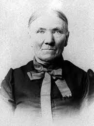

<section class="scientists">
    <div class="line"></div>
    <div class="container">
        <h2 class="scientists__title">Обери вченого/их</h2>

        <div class="scientists__container">
            </img>
            </img>
            </img>
            </img>
            </img>
            </img>
            </img>
            </img>
            </img>
            </img>
            </img>
            </img>
        </div>

        <div class="scientists__buttons">
            <button class="scientists__button" id="born-19-century">
                Які вчені народилися в 19 ст.</button>
            <button class="scientists__button" id="einstein-birth-year">
                Знайти рік народження Albert Einstein</button>
            <button class="scientists__button" id="sort-alphabet">
                Відсортувати вчених за алфавітом</button>
            <button class="scientists__button" id="starts-c">
                Знайти вчених, прізвища яких починаються на літеру “C”</button>
            <button class="scientists__button" id="remove-starts-a">
                Видалити всіх вчених, ім’я яких починається на “А”</button>
            <button class="scientists__button" id="sort-by-lifespan">
                Відсортувати вчених за кількістю прожитих років</button>
            <button class="scientists__button" id="youngest-scientist">
                Знайти вченого, який народився найпізніше</button>
            <button class="scientists__button" id="longest-shortest-life">
                Знайти вченого, який прожив найдовше і вченого, який прожив найменше
            </button>
            <button class="scientists__button" id="same-letters">
                Знайти вчених, в яких співпадають перші літери імені і прізвища
            </button>
        </div>
    </div>
</section>